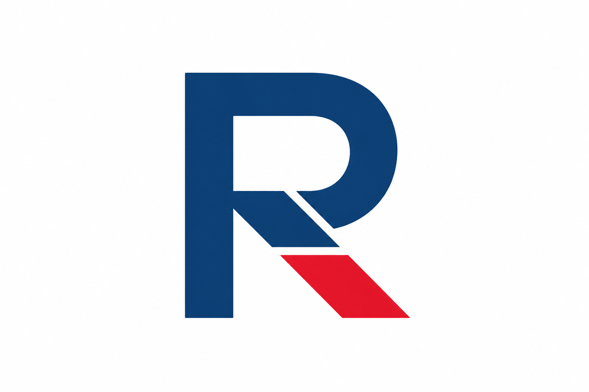

Concept 1
Split-Stem R
A geometric R whose diagonal leg bifurcates into navy and red paths — encoding "Repair" and "Pilot" duality inside a single letter without adding extra symbols.
repairpilot-v3-1-split-stem-r.png